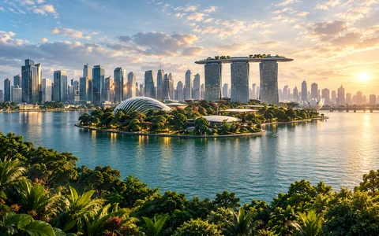
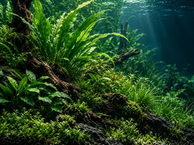
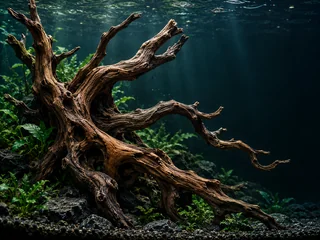
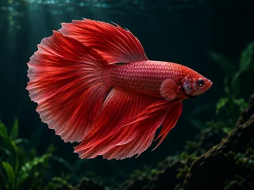
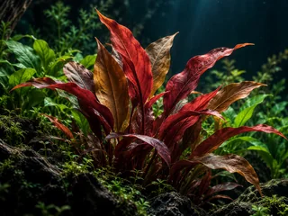

WATER. FORM. IMAGINATION.AN AQUATIC DESIGN STUDIO CONCEPT
An Underwater World,
Composed with Curiosity,Made for Wonder.
Explore five imagined aquatic studies through colour, foliage and sculptural forms. A quiet place for a closer look.
- NATURAL FORMS
- A WORLD TO EXPLORE
- BEAUTY IN THE DETAILS
INDEPENDENT DESIGN CONCEPT
A LITTLE
CLOSER
TO NATURE
NATURE
CONNECTS
US ALL

OUR HERITAGE · A DESIGN STORY
Where Water Meets
Our Imagination.
A fictional studio concept shaped by imagined waterscapes. The illustrated waterfront offers a creative setting for exploring colour, movement and the balance between natural and built forms.
The inspiration
This imagined waterfront is an AI-generated illustration. Tidal Atelier is a fictional design concept, with no premises, company history or verified operating location.
OUR COLLECTIONS
Five Ways to See
Water & Form.
Five illustrative studies of colour, texture and form, from ornamental silhouettes to a warmer botanical palette.
Take a Closer Look
Ornamental Fish
Extraordinary colours.
Remarkable forms.

Aquatic Plants
Living textures.
An underwater garden.

Driftwood
Natural character.
Sculptural beauty.

Crimson Fin Studies
Flowing silhouettes.
A warmer palette.

Warm Aquatic Foliage
Bronze leaves.
A different rhythm.
Ornamental Fish
COLLECTION STUDY
Ornamental Fish
Flowing fins, subtle light and vivid colour bring movement to this collection study. Explore the visual character of ornamental fish through an imagined underwater scene.
The palette
Crimson, iridescent blue and deep teal.
A closer look
Look for the contrast between the quiet water and the intricate silhouette. This is an artistic category study, without species or availability claims.
These AI-generated images are illustrative. They do not represent available products or verified species.
Aquatic Plants
COLLECTION STUDY
Aquatic Plants
Long leaves, fine mosses and layered greens create a sense of depth. This plant study offers visual inspiration for an imagined aquatic landscape.
The palette
Emerald, moss green and soft turquoise.
A closer look
Explore the rhythm of the leaf shapes and the way light moves through the greenery. The illustration is not a plant catalogue or a care guide.
These AI-generated images are illustrative. They do not represent available products or verified species.
Driftwood
COLLECTION STUDY
Driftwood
Twisted branches and weathered textures form a quiet natural sculpture. This material study celebrates the organic shapes that lend an aquatic scene its character.
The palette
Warm umber, weathered brown and ocean teal.
A closer look
Notice the branching silhouette, open space and warm wood grain. This image is a creative study, without claims about material safety, sourcing or stock.
These AI-generated images are illustrative. They do not represent available products or verified species.
Crimson Fin Studies
COLLECTION STUDY
Crimson Fin Studies
Flowing fins, subtle light and vivid colour bring movement to this collection study. Explore the visual character of ornamental fish through an imagined underwater scene.
The palette
Crimson, rose and near-black teal.
A closer look
Look for the contrast between the quiet water and the intricate silhouette. This is an artistic category study, without species or availability claims.
These AI-generated images are illustrative. They do not represent available products or verified species.
Warm Aquatic Foliage
COLLECTION STUDY
Warm Aquatic Foliage
Long leaves, fine mosses and layered greens create a sense of depth. This plant study offers visual inspiration for an imagined aquatic landscape.
The palette
Bronze, burgundy and emerald.
A closer look
Explore the rhythm of the leaf shapes and the way light moves through the greenery. The illustration is not a plant catalogue or a care guide.
These AI-generated images are illustrative. They do not represent available products or verified species.
OUR APPROACH · AN ILLUSTRATIVE STUDY
Considered in Every Detail.
Colour, form and texture shape these aquatic studies. Each detail is part of the design, rather than a promise about products or services.
About These Studies
These five elements describe our visual composition. They are not sourcing standards, cultivation practices, certifications, packaging promises or delivery guarantees.
- COLOUR & FORM
- BOTANICAL TEXTURE
- NATURAL SHAPES
- QUIET COMPOSITION
- AQUATIC ATMOSPHERE

SELECTED HIGHLIGHTS
Exceptional Forms.
Below the Surface.
SMALL
DETAILS.
A WORLD
OF WONDER.
NATURE
PEOPLE
POSSIBILITY
IMAGINE A QUIETER UNDERWATER WORLD
Start with a Little Wonder
Beautiful possibilities begin with a conversation.
Fictional demo — real enquiries are unavailable.
Enquiry Information
A design preview, for now.
There is no verified business contact or enquiry backend connected to this concept. No message is collected, stored or sent. Explore the collection studies to continue the preview.
Back to CollectionsGood things
begin with
nature.